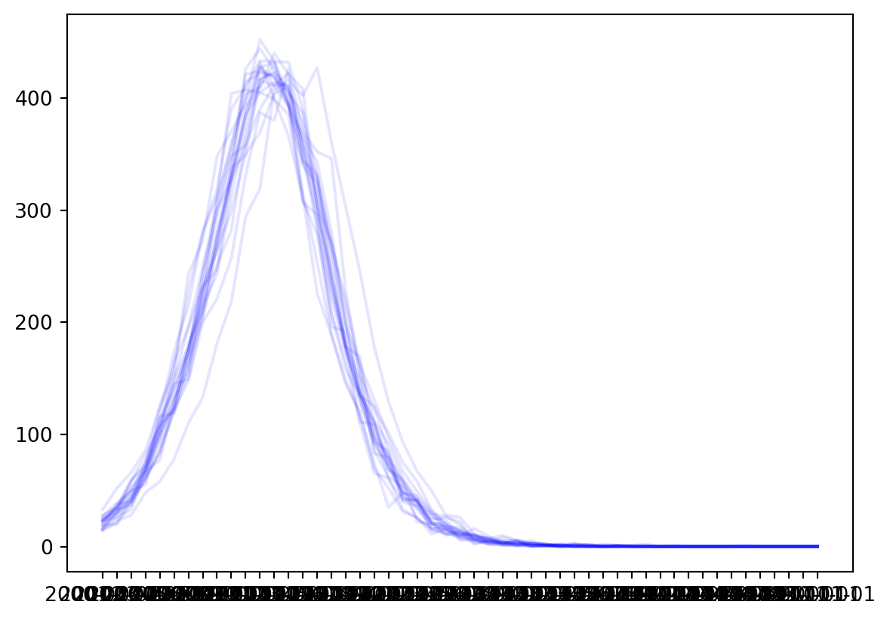
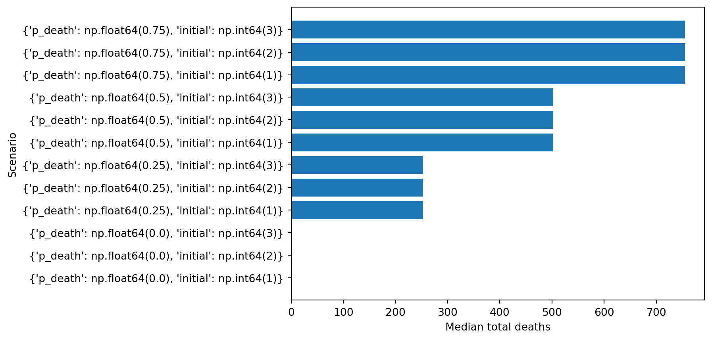
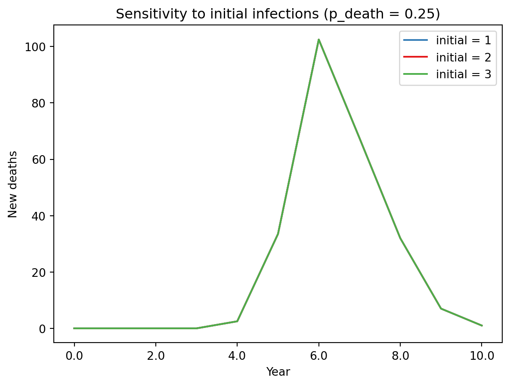

import starsim as ss
ss.options(jupyter=True)
import numpy as np
import pandas as pd
from pathlib import Path
import matplotlib.pyplot as plt
import sciris as scSamples
As Starsim models are usually stochastic, for a single scenario it is often desirable to run the model multiple times with different random seeds. The role of the Samples class is to facilitate working with large numbers of simulations and scenarios, to ease:
- Loading large result sets
- Filtering/selecting simulation runs
- Plotting individual simulations and aggregate results
- Slicing result sets to compare scenarios
Essentially, if we think of the processed results of a model run as being
- A collection of scalar outputs (e.g., cumulative infections, total deaths)
- A dataframe of time-varying outputs (e.g., new diagnoses per day, number of people on treatment each day)
then the classes Dataset and Samples manage collections of these results. In particular, the Samples class manages different random samples of the same parameters, and the Dataset class manages a collection of Samples.
These classes are particularly designed to facilitate working with tens of thousands of simulation runs, where other approaches such as those based on the MultiSim class may not be feasible.
Obtaining simulation output
To demonstrate usage of this class, we will first consider constructing the kinds of output that the Samples class stores. We begin by running a basic simulation using the SIR model:
ppl = ss.People(5000)
net = ss.ndict(ss.RandomNet(n_contacts=ss.poisson(5)))
sir = ss.SIR()
sim = ss.Sim(people=ppl, networks=net, diseases=sir, rand_seed=0)
sim.run();Initializing sim with 5000 agents
Running 2000.01.01 ( 0/51) (0.00 s) ———————————————————— 2%
Running 2010.01.01 (10/51) (0.23 s) ••••———————————————— 22%
Running 2020.01.01 (20/51) (0.27 s) ••••••••———————————— 41%
Running 2030.01.01 (30/51) (0.30 s) ••••••••••••———————— 61%
Running 2040.01.01 (40/51) (0.33 s) ••••••••••••••••———— 80%
Running 2050.01.01 (50/51) (0.36 s) •••••••••••••••••••• 100%
Dataframe output
A Sim instance is (in general) too large and complex to efficiently store on disk - the file size and loading time make it prohibitive to work with tens of thousands of simulations. Therefore, rather than storing entire Sim instances, we instead store dataframes containing just the simulation results and any other pre-processed calculated quantities. There are broadly speaking two types of outputs:
- Scalar outputs at each timepoint (e.g., daily new cases)
- Scalar outputs for each simulation (e.g., total number of deaths)
These outputs can each be produced from a Sim - the former has a tabular structure, and the latter has a dictionary structure (which can later be assembled into a table where the rows correspond to each simulation). The export_df method is a quick way to obtain a dataframe with the appropriate structure retaining all results from the Sim.
In real-world use, it is often helpful to write your own function to extract a dataframe of simulation outputs, because typically some of the outputs need to be extracted from custom Analyzers.
sim.to_df()| timevec | randomnet_n_edges | sir_n_susceptible | sir_n_infected | sir_n_recovered | sir_prevalence | sir_new_infections | sir_cum_infections | n_alive | n_female | new_deaths | new_emigrants | cum_deaths | |
|---|---|---|---|---|---|---|---|---|---|---|---|---|---|
| 0 | 2000-01-01 | 12616.0 | 4937.0 | 63.0 | 0.0 | 0.012600 | 15.0 | 15.0 | 5000.0 | 0.0 | 0.0 | 0.0 | 0.0 |
| 1 | 2001-01-01 | 12598.0 | 4905.0 | 95.0 | 0.0 | 0.019000 | 32.0 | 47.0 | 5000.0 | 0.0 | 0.0 | 0.0 | 0.0 |
| 2 | 2002-01-01 | 12436.0 | 4862.0 | 138.0 | 0.0 | 0.027600 | 43.0 | 90.0 | 5000.0 | 0.0 | 0.0 | 0.0 | 0.0 |
| 3 | 2003-01-01 | 12570.0 | 4795.0 | 205.0 | 0.0 | 0.041000 | 67.0 | 157.0 | 5000.0 | 0.0 | 0.0 | 0.0 | 0.0 |
| 4 | 2004-01-01 | 12525.0 | 4699.0 | 301.0 | 0.0 | 0.060200 | 96.0 | 253.0 | 5000.0 | 0.0 | 0.0 | 0.0 | 0.0 |
| 5 | 2005-01-01 | 12456.0 | 4555.0 | 434.0 | 11.0 | 0.086800 | 144.0 | 397.0 | 5000.0 | 0.0 | 0.0 | 0.0 | 0.0 |
| 6 | 2006-01-01 | 12662.0 | 4373.0 | 587.0 | 40.0 | 0.117400 | 182.0 | 579.0 | 5000.0 | 0.0 | 0.0 | 0.0 | 0.0 |
| 7 | 2007-01-01 | 12486.0 | 4142.0 | 777.0 | 80.0 | 0.155400 | 231.0 | 810.0 | 4999.0 | 0.0 | 1.0 | 0.0 | 0.0 |
| 8 | 2008-01-01 | 12516.0 | 3843.0 | 1034.0 | 122.0 | 0.206841 | 299.0 | 1109.0 | 4999.0 | 0.0 | 0.0 | 0.0 | 1.0 |
| 9 | 2009-01-01 | 12412.0 | 3524.0 | 1290.0 | 184.0 | 0.258052 | 319.0 | 1428.0 | 4998.0 | 0.0 | 1.0 | 0.0 | 1.0 |
| 10 | 2010-01-01 | 12658.0 | 3128.0 | 1597.0 | 272.0 | 0.319528 | 396.0 | 1824.0 | 4997.0 | 0.0 | 1.0 | 0.0 | 2.0 |
| 11 | 2011-01-01 | 12534.0 | 2682.0 | 1921.0 | 393.0 | 0.384431 | 446.0 | 2270.0 | 4996.0 | 0.0 | 1.0 | 0.0 | 3.0 |
| 12 | 2012-01-01 | 12634.0 | 2276.0 | 2159.0 | 559.0 | 0.432146 | 406.0 | 2676.0 | 4994.0 | 0.0 | 2.0 | 0.0 | 4.0 |
| 13 | 2013-01-01 | 12498.0 | 1882.0 | 2346.0 | 766.0 | 0.469764 | 394.0 | 3070.0 | 4994.0 | 0.0 | 0.0 | 0.0 | 6.0 |
| 14 | 2014-01-01 | 12401.0 | 1523.0 | 2456.0 | 1014.0 | 0.491790 | 359.0 | 3429.0 | 4993.0 | 0.0 | 1.0 | 0.0 | 6.0 |
| 15 | 2015-01-01 | 12482.0 | 1250.0 | 2421.0 | 1319.0 | 0.484879 | 273.0 | 3702.0 | 4990.0 | 0.0 | 3.0 | 0.0 | 7.0 |
| 16 | 2016-01-01 | 12532.0 | 1035.0 | 2275.0 | 1679.0 | 0.455912 | 215.0 | 3917.0 | 4989.0 | 0.0 | 1.0 | 0.0 | 10.0 |
| 17 | 2017-01-01 | 12585.0 | 880.0 | 2030.0 | 2076.0 | 0.406895 | 155.0 | 4072.0 | 4986.0 | 0.0 | 3.0 | 0.0 | 11.0 |
| 18 | 2018-01-01 | 12364.0 | 746.0 | 1749.0 | 2489.0 | 0.350782 | 134.0 | 4206.0 | 4984.0 | 0.0 | 2.0 | 0.0 | 14.0 |
| 19 | 2019-01-01 | 12565.0 | 649.0 | 1449.0 | 2877.0 | 0.290730 | 97.0 | 4303.0 | 4975.0 | 0.0 | 9.0 | 0.0 | 16.0 |
| 20 | 2020-01-01 | 12442.0 | 573.0 | 1159.0 | 3241.0 | 0.232965 | 76.0 | 4379.0 | 4973.0 | 0.0 | 2.0 | 0.0 | 25.0 |
| 21 | 2021-01-01 | 12325.0 | 540.0 | 868.0 | 3559.0 | 0.174543 | 33.0 | 4412.0 | 4967.0 | 0.0 | 6.0 | 0.0 | 27.0 |
| 22 | 2022-01-01 | 12465.0 | 505.0 | 667.0 | 3793.0 | 0.134286 | 35.0 | 4447.0 | 4965.0 | 0.0 | 2.0 | 0.0 | 33.0 |
| 23 | 2023-01-01 | 12490.0 | 485.0 | 500.0 | 3979.0 | 0.100705 | 20.0 | 4467.0 | 4964.0 | 0.0 | 1.0 | 0.0 | 35.0 |
| 24 | 2024-01-01 | 12396.0 | 479.0 | 347.0 | 4138.0 | 0.069903 | 6.0 | 4473.0 | 4964.0 | 0.0 | 0.0 | 0.0 | 36.0 |
| 25 | 2025-01-01 | 12400.0 | 468.0 | 246.0 | 4248.0 | 0.049557 | 11.0 | 4484.0 | 4962.0 | 0.0 | 2.0 | 0.0 | 36.0 |
| 26 | 2026-01-01 | 12420.0 | 460.0 | 175.0 | 4326.0 | 0.035268 | 8.0 | 4492.0 | 4961.0 | 0.0 | 1.0 | 0.0 | 38.0 |
| 27 | 2027-01-01 | 12511.0 | 453.0 | 116.0 | 4392.0 | 0.023382 | 7.0 | 4499.0 | 4961.0 | 0.0 | 0.0 | 0.0 | 39.0 |
| 28 | 2028-01-01 | 12410.0 | 448.0 | 82.0 | 4431.0 | 0.016529 | 5.0 | 4504.0 | 4961.0 | 0.0 | 0.0 | 0.0 | 39.0 |
| 29 | 2029-01-01 | 12492.0 | 447.0 | 56.0 | 4458.0 | 0.011288 | 1.0 | 4505.0 | 4961.0 | 0.0 | 0.0 | 0.0 | 39.0 |
| 30 | 2030-01-01 | 12537.0 | 445.0 | 40.0 | 4474.0 | 0.008063 | 2.0 | 4507.0 | 4959.0 | 0.0 | 2.0 | 0.0 | 39.0 |
| 31 | 2031-01-01 | 12199.0 | 443.0 | 31.0 | 4484.0 | 0.006251 | 2.0 | 4509.0 | 4958.0 | 0.0 | 1.0 | 0.0 | 41.0 |
| 32 | 2032-01-01 | 12290.0 | 440.0 | 24.0 | 4494.0 | 0.004841 | 3.0 | 4512.0 | 4958.0 | 0.0 | 0.0 | 0.0 | 42.0 |
| 33 | 2033-01-01 | 12387.0 | 439.0 | 20.0 | 4499.0 | 0.004034 | 1.0 | 4513.0 | 4958.0 | 0.0 | 0.0 | 0.0 | 42.0 |
| 34 | 2034-01-01 | 12299.0 | 438.0 | 16.0 | 4504.0 | 0.003227 | 1.0 | 4514.0 | 4958.0 | 0.0 | 0.0 | 0.0 | 42.0 |
| 35 | 2035-01-01 | 12533.0 | 438.0 | 11.0 | 4509.0 | 0.002219 | 0.0 | 4514.0 | 4958.0 | 0.0 | 0.0 | 0.0 | 42.0 |
| 36 | 2036-01-01 | 12577.0 | 437.0 | 9.0 | 4512.0 | 0.001815 | 1.0 | 4515.0 | 4958.0 | 0.0 | 0.0 | 0.0 | 42.0 |
| 37 | 2037-01-01 | 12405.0 | 437.0 | 6.0 | 4515.0 | 0.001210 | 0.0 | 4515.0 | 4958.0 | 0.0 | 0.0 | 0.0 | 42.0 |
| 38 | 2038-01-01 | 12471.0 | 437.0 | 3.0 | 4518.0 | 0.000605 | 0.0 | 4515.0 | 4958.0 | 0.0 | 0.0 | 0.0 | 42.0 |
| 39 | 2039-01-01 | 12483.0 | 437.0 | 3.0 | 4518.0 | 0.000605 | 0.0 | 4515.0 | 4958.0 | 0.0 | 0.0 | 0.0 | 42.0 |
| 40 | 2040-01-01 | 12359.0 | 437.0 | 1.0 | 4520.0 | 0.000202 | 0.0 | 4515.0 | 4958.0 | 0.0 | 0.0 | 0.0 | 42.0 |
| 41 | 2041-01-01 | 12419.0 | 437.0 | 1.0 | 4520.0 | 0.000202 | 0.0 | 4515.0 | 4958.0 | 0.0 | 0.0 | 0.0 | 42.0 |
| 42 | 2042-01-01 | 12242.0 | 437.0 | 1.0 | 4520.0 | 0.000202 | 0.0 | 4515.0 | 4958.0 | 0.0 | 0.0 | 0.0 | 42.0 |
| 43 | 2043-01-01 | 12449.0 | 437.0 | 0.0 | 4521.0 | 0.000000 | 0.0 | 4515.0 | 4958.0 | 0.0 | 0.0 | 0.0 | 42.0 |
| 44 | 2044-01-01 | 12400.0 | 437.0 | 0.0 | 4521.0 | 0.000000 | 0.0 | 4515.0 | 4958.0 | 0.0 | 0.0 | 0.0 | 42.0 |
| 45 | 2045-01-01 | 12324.0 | 437.0 | 0.0 | 4521.0 | 0.000000 | 0.0 | 4515.0 | 4958.0 | 0.0 | 0.0 | 0.0 | 42.0 |
| 46 | 2046-01-01 | 12445.0 | 437.0 | 0.0 | 4521.0 | 0.000000 | 0.0 | 4515.0 | 4958.0 | 0.0 | 0.0 | 0.0 | 42.0 |
| 47 | 2047-01-01 | 12368.0 | 437.0 | 0.0 | 4521.0 | 0.000000 | 0.0 | 4515.0 | 4958.0 | 0.0 | 0.0 | 0.0 | 42.0 |
| 48 | 2048-01-01 | 12479.0 | 437.0 | 0.0 | 4521.0 | 0.000000 | 0.0 | 4515.0 | 4958.0 | 0.0 | 0.0 | 0.0 | 42.0 |
| 49 | 2049-01-01 | 12304.0 | 437.0 | 0.0 | 4521.0 | 0.000000 | 0.0 | 4515.0 | 4958.0 | 0.0 | 0.0 | 0.0 | 42.0 |
| 50 | 2050-01-01 | 12485.0 | 437.0 | 0.0 | 4521.0 | 0.000000 | 0.0 | 4515.0 | 4958.0 | 0.0 | 0.0 | 0.0 | 42.0 |
Scalar/summary outputs
We can also consider extracting a summary dictionary of scalar values. For example:
summary = {}
summary['seed'] = sim.pars['rand_seed']
summary['p_death'] = sim.diseases[0].pars.p_death.pars.p
summary['cum_infections'] = sum(sim.results.sir.new_infections)
summary['cum_deaths'] = sum(sim.results.new_deaths)
summary{'seed': 0, 'p_death': 0.01, 'cum_infections': 4515.0, 'cum_deaths': 42.0}Notice how in the example above, the summary contains both simulation inputs (seed, probability of death) as well as simulation outputs (total infections, total deaths). The simulation summary should contain sufficient information about the simulation inputs to identify the simulation. The seed should generally be present. The other inputs normally correspond to variables that scenarios are being run over. In this example, we will run scenarios comparing simulations with different probabilities of death. Therefore, we need to include the death probability in the simulation summary.
Running the model
For usage at scale, the steps of creating a simulation, running it and producing these outputs are usually encapsulated in functions:
def get_sim(seed, p_death):
ppl = ss.People(5000)
net = ss.RandomNet(n_contacts=ss.poisson(5))
sir = ss.SIR(p_death=p_death)
sim = ss.Sim(people=ppl, networks=net, diseases=sir, rand_seed=seed)
sim.init(verbose=0)
return sim
def run_sim(seed, p_death):
sim = get_sim(seed, p_death)
sim.run(verbose=0)
df = sim.to_df()
summary = {}
summary['seed'] = sim.pars['rand_seed']
summary['p_death']= sim.diseases[0].pars.p_death.pars.p
summary['cum_infections'] = sum(sim.results.sir.new_infections)
summary['cum_deaths'] = sum(sim.results.new_deaths)
return df, summaryThe functions above could be combined into a single function. However, in real world usage it is often convenient to be able to construct a simulation independently of running it (e.g., for diagnostic purposes or to allow running the sim in a range of different ways). The suggested structure above, with a get_sim() function and a run_sim() function are recommended as standard practice.
Now running a simulation for a given beta/seed value and returning the processed outputs can be done in a single step:
# Scalar output
df, summary = run_sim(0, 0.2);
summary{'seed': 0, 'p_death': 0.2, 'cum_infections': 4628.0, 'cum_deaths': 934.0}We can produce all of the samples associated with a scenario by iterating over the input seed values. This is being done in a basic loop here, but could be done in more sophistical ways to leverage parallel computing (e.g., with sc.parallelize for single host parallelization, or with celery for distributed computation).
# Run a collection of sims
n = 20
seeds = np.arange(n)
outputs = [run_sim(seed, 0.2) for seed in seeds]Saving and loading the samples
We have now produced simulation outputs (dataframes and summary statistics) for 20 simulation runs. The outputs here are a list of tuples, containing the dataframe and dictionary outputs for each sample. This list can be passed to the cvv.Samples class to produce a single compressed file on disk:
resultsdir = Path('results')
resultsdir.mkdir(exist_ok=True, parents=True)
ss.Samples.new(resultsdir, outputs, identifiers=["p_death"])
list(resultsdir.iterdir())Zip file saved to "/home/cliffk/idm/starsim/docs/user_guide/results/0.2.zip"[PosixPath('results/0.2.zip')]Notice that a list of identifiers should be passed to the Samples constructor. This is a list of keys in the simulation summary dictionaries that identifies the scenario. These would be model inputs rather than model outputs, and they should be the same for all of the outputs passed into the Samples object. If no file name is explicitly provided, the file will automatically be assigned a name based on the identifiers.
The Samples file internally contains metadata recording the identifiers. When Samples are accessed using the Dataset class, they can be accessed via the internal metadata. Therefore for a typical workflow, the file name largely doesn’t matter, and it usually doesn’t need to be manually specified.
The saved file can be loaded and accessed via the Samples class. Importantly, individual files can be extracted from a .zip file without decompressing the entire archive. This means that loading the summary dataframe and using it to selectively load the full outputs for individual runs can be done efficiently. For example, loading retrieving a single result from a Samples file would take a similar amount of time regardless of whether the file contained 10 samples or 100000 samples.
# Load the samples
res = ss.Samples('results/0.2.zip')
res.summary| cum_infections | cum_deaths | ||
|---|---|---|---|
| seed | p_death | ||
| 0 | 0.2 | 4628.0 | 934.0 |
| 1 | 0.2 | 4600.0 | 909.0 |
| 2 | 0.2 | 4618.0 | 926.0 |
| 3 | 0.2 | 4625.0 | 992.0 |
| 4 | 0.2 | 4564.0 | 915.0 |
| 5 | 0.2 | 4656.0 | 971.0 |
| 6 | 0.2 | 4633.0 | 979.0 |
| 7 | 0.2 | 4672.0 | 966.0 |
| 8 | 0.2 | 4613.0 | 873.0 |
| 9 | 0.2 | 4645.0 | 960.0 |
| 10 | 0.2 | 4569.0 | 940.0 |
| 11 | 0.2 | 4639.0 | 920.0 |
| 12 | 0.2 | 4605.0 | 939.0 |
| 13 | 0.2 | 4619.0 | 926.0 |
| 14 | 0.2 | 4664.0 | 978.0 |
| 15 | 0.2 | 4599.0 | 910.0 |
| 16 | 0.2 | 4622.0 | 900.0 |
| 17 | 0.2 | 4603.0 | 942.0 |
| 18 | 0.2 | 4645.0 | 901.0 |
| 19 | 0.2 | 4623.0 | 884.0 |
When the Samples file was created, a dictionary of scalars was provided for each result. These are automatically used to populate a ‘summary’ dataframe, where each identifier (and the seed) are used as the index, and the remaining keys appear as columns, as shown above. As a shortcut, columns of the summary dataframe can be accessed by indexing the Samples object directly, without having to access the .summary attribute e.g.,
res['cum_infections']seed p_death
0 0.2 4628.0
1 0.2 4600.0
2 0.2 4618.0
3 0.2 4625.0
4 0.2 4564.0
5 0.2 4656.0
6 0.2 4633.0
7 0.2 4672.0
8 0.2 4613.0
9 0.2 4645.0
10 0.2 4569.0
11 0.2 4639.0
12 0.2 4605.0
13 0.2 4619.0
14 0.2 4664.0
15 0.2 4599.0
16 0.2 4622.0
17 0.2 4603.0
18 0.2 4645.0
19 0.2 4623.0
Name: cum_infections, dtype: float64Each simulation is uniquely identified by its seed, and the time series dataframe for each simulation can be accessed by indexing the Samples object with the seed:
res[0]| Unnamed: 0 | randomnet_n_edges | sir_n_susceptible | sir_n_infected | sir_n_recovered | sir_prevalence | sir_new_infections | sir_cum_infections | n_alive | n_female | new_deaths | new_emigrants | cum_deaths | |
|---|---|---|---|---|---|---|---|---|---|---|---|---|---|
| timevec | |||||||||||||
| 2000-01-01 | 0 | 12616.0 | 4937.0 | 63.0 | 0.0 | 0.012600 | 15.0 | 15.0 | 5000.0 | 0.0 | 0.0 | 0.0 | 0.0 |
| 2001-01-01 | 1 | 12598.0 | 4905.0 | 95.0 | 0.0 | 0.019000 | 32.0 | 47.0 | 5000.0 | 0.0 | 0.0 | 0.0 | 0.0 |
| 2002-01-01 | 2 | 12436.0 | 4862.0 | 138.0 | 0.0 | 0.027600 | 43.0 | 90.0 | 5000.0 | 0.0 | 0.0 | 0.0 | 0.0 |
| 2003-01-01 | 3 | 12570.0 | 4795.0 | 205.0 | 0.0 | 0.041000 | 67.0 | 157.0 | 5000.0 | 0.0 | 0.0 | 0.0 | 0.0 |
| 2004-01-01 | 4 | 12525.0 | 4699.0 | 301.0 | 0.0 | 0.060200 | 96.0 | 253.0 | 5000.0 | 0.0 | 0.0 | 0.0 | 0.0 |
| 2005-01-01 | 5 | 12456.0 | 4554.0 | 435.0 | 9.0 | 0.087000 | 145.0 | 398.0 | 4998.0 | 0.0 | 2.0 | 0.0 | 0.0 |
| 2006-01-01 | 6 | 12660.0 | 4405.0 | 555.0 | 33.0 | 0.111044 | 149.0 | 547.0 | 4993.0 | 0.0 | 5.0 | 0.0 | 2.0 |
| 2007-01-01 | 7 | 12466.0 | 4195.0 | 724.0 | 67.0 | 0.145003 | 210.0 | 757.0 | 4986.0 | 0.0 | 7.0 | 0.0 | 7.0 |
| 2008-01-01 | 8 | 12502.0 | 3916.0 | 961.0 | 105.0 | 0.192740 | 279.0 | 1036.0 | 4982.0 | 0.0 | 4.0 | 0.0 | 14.0 |
| 2009-01-01 | 9 | 12389.0 | 3587.0 | 1227.0 | 155.0 | 0.246287 | 329.0 | 1365.0 | 4969.0 | 0.0 | 13.0 | 0.0 | 18.0 |
| 2010-01-01 | 10 | 12544.0 | 3203.0 | 1521.0 | 227.0 | 0.306098 | 384.0 | 1749.0 | 4951.0 | 0.0 | 18.0 | 0.0 | 31.0 |
| 2011-01-01 | 11 | 12437.0 | 2776.0 | 1832.0 | 312.0 | 0.370026 | 427.0 | 2176.0 | 4920.0 | 0.0 | 31.0 | 0.0 | 49.0 |
| 2012-01-01 | 12 | 12381.0 | 2358.0 | 2101.0 | 428.0 | 0.427033 | 418.0 | 2594.0 | 4887.0 | 0.0 | 33.0 | 0.0 | 80.0 |
| 2013-01-01 | 13 | 12178.0 | 1954.0 | 2305.0 | 588.0 | 0.471660 | 404.0 | 2998.0 | 4847.0 | 0.0 | 40.0 | 0.0 | 113.0 |
| 2014-01-01 | 14 | 12053.0 | 1567.0 | 2454.0 | 784.0 | 0.506293 | 387.0 | 3385.0 | 4805.0 | 0.0 | 42.0 | 0.0 | 153.0 |
| 2015-01-01 | 15 | 12043.0 | 1236.0 | 2487.0 | 1030.0 | 0.517586 | 331.0 | 3716.0 | 4753.0 | 0.0 | 52.0 | 0.0 | 195.0 |
| 2016-01-01 | 16 | 11899.0 | 975.0 | 2388.0 | 1318.0 | 0.502420 | 261.0 | 3977.0 | 4681.0 | 0.0 | 72.0 | 0.0 | 247.0 |
| 2017-01-01 | 17 | 11815.0 | 796.0 | 2165.0 | 1628.0 | 0.462508 | 179.0 | 4156.0 | 4589.0 | 0.0 | 92.0 | 0.0 | 319.0 |
| 2018-01-01 | 18 | 11372.0 | 685.0 | 1868.0 | 1951.0 | 0.407060 | 111.0 | 4267.0 | 4504.0 | 0.0 | 85.0 | 0.0 | 411.0 |
| 2019-01-01 | 19 | 11297.0 | 576.0 | 1587.0 | 2265.0 | 0.352353 | 109.0 | 4376.0 | 4428.0 | 0.0 | 76.0 | 0.0 | 496.0 |
| 2020-01-01 | 20 | 11069.0 | 507.0 | 1252.0 | 2602.0 | 0.282746 | 69.0 | 4445.0 | 4361.0 | 0.0 | 67.0 | 0.0 | 572.0 |
| 2021-01-01 | 21 | 10853.0 | 450.0 | 972.0 | 2869.0 | 0.222885 | 57.0 | 4502.0 | 4291.0 | 0.0 | 70.0 | 0.0 | 639.0 |
| 2022-01-01 | 22 | 10761.0 | 411.0 | 732.0 | 3097.0 | 0.170590 | 39.0 | 4541.0 | 4240.0 | 0.0 | 51.0 | 0.0 | 709.0 |
| 2023-01-01 | 23 | 10648.0 | 385.0 | 526.0 | 3276.0 | 0.124057 | 26.0 | 4567.0 | 4187.0 | 0.0 | 53.0 | 0.0 | 760.0 |
| 2024-01-01 | 24 | 10417.0 | 362.0 | 388.0 | 3404.0 | 0.092668 | 23.0 | 4590.0 | 4154.0 | 0.0 | 33.0 | 0.0 | 813.0 |
| 2025-01-01 | 25 | 10348.0 | 350.0 | 281.0 | 3495.0 | 0.067646 | 12.0 | 4602.0 | 4126.0 | 0.0 | 28.0 | 0.0 | 846.0 |
| 2026-01-01 | 26 | 10319.0 | 340.0 | 206.0 | 3561.0 | 0.049927 | 10.0 | 4612.0 | 4107.0 | 0.0 | 19.0 | 0.0 | 874.0 |
| 2027-01-01 | 27 | 10292.0 | 333.0 | 148.0 | 3616.0 | 0.036036 | 7.0 | 4619.0 | 4097.0 | 0.0 | 10.0 | 0.0 | 893.0 |
| 2028-01-01 | 28 | 10198.0 | 332.0 | 103.0 | 3653.0 | 0.025140 | 1.0 | 4620.0 | 4088.0 | 0.0 | 9.0 | 0.0 | 903.0 |
| 2029-01-01 | 29 | 10251.0 | 330.0 | 67.0 | 3687.0 | 0.016389 | 2.0 | 4622.0 | 4084.0 | 0.0 | 4.0 | 0.0 | 912.0 |
| 2030-01-01 | 30 | 10323.0 | 327.0 | 48.0 | 3699.0 | 0.011753 | 3.0 | 4625.0 | 4074.0 | 0.0 | 10.0 | 0.0 | 916.0 |
| 2031-01-01 | 31 | 10084.0 | 325.0 | 34.0 | 3712.0 | 0.008346 | 2.0 | 4627.0 | 4071.0 | 0.0 | 3.0 | 0.0 | 926.0 |
| 2032-01-01 | 32 | 10072.0 | 325.0 | 19.0 | 3726.0 | 0.004667 | 0.0 | 4627.0 | 4070.0 | 0.0 | 1.0 | 0.0 | 929.0 |
| 2033-01-01 | 33 | 10177.0 | 324.0 | 12.0 | 3732.0 | 0.002948 | 1.0 | 4628.0 | 4068.0 | 0.0 | 2.0 | 0.0 | 930.0 |
| 2034-01-01 | 34 | 10122.0 | 324.0 | 10.0 | 3734.0 | 0.002458 | 0.0 | 4628.0 | 4068.0 | 0.0 | 0.0 | 0.0 | 932.0 |
| 2035-01-01 | 35 | 10260.0 | 324.0 | 7.0 | 3737.0 | 0.001721 | 0.0 | 4628.0 | 4068.0 | 0.0 | 0.0 | 0.0 | 932.0 |
| 2036-01-01 | 36 | 10318.0 | 324.0 | 6.0 | 3737.0 | 0.001475 | 0.0 | 4628.0 | 4067.0 | 0.0 | 1.0 | 0.0 | 932.0 |
| 2037-01-01 | 37 | 10182.0 | 324.0 | 3.0 | 3739.0 | 0.000738 | 0.0 | 4628.0 | 4066.0 | 0.0 | 1.0 | 0.0 | 933.0 |
| 2038-01-01 | 38 | 10212.0 | 324.0 | 1.0 | 3741.0 | 0.000246 | 0.0 | 4628.0 | 4066.0 | 0.0 | 0.0 | 0.0 | 934.0 |
| 2039-01-01 | 39 | 10319.0 | 324.0 | 1.0 | 3741.0 | 0.000246 | 0.0 | 4628.0 | 4066.0 | 0.0 | 0.0 | 0.0 | 934.0 |
| 2040-01-01 | 40 | 10139.0 | 324.0 | 1.0 | 3741.0 | 0.000246 | 0.0 | 4628.0 | 4066.0 | 0.0 | 0.0 | 0.0 | 934.0 |
| 2041-01-01 | 41 | 10179.0 | 324.0 | 0.0 | 3742.0 | 0.000000 | 0.0 | 4628.0 | 4066.0 | 0.0 | 0.0 | 0.0 | 934.0 |
| 2042-01-01 | 42 | 10023.0 | 324.0 | 0.0 | 3742.0 | 0.000000 | 0.0 | 4628.0 | 4066.0 | 0.0 | 0.0 | 0.0 | 934.0 |
| 2043-01-01 | 43 | 10143.0 | 324.0 | 0.0 | 3742.0 | 0.000000 | 0.0 | 4628.0 | 4066.0 | 0.0 | 0.0 | 0.0 | 934.0 |
| 2044-01-01 | 44 | 10176.0 | 324.0 | 0.0 | 3742.0 | 0.000000 | 0.0 | 4628.0 | 4066.0 | 0.0 | 0.0 | 0.0 | 934.0 |
| 2045-01-01 | 45 | 10190.0 | 324.0 | 0.0 | 3742.0 | 0.000000 | 0.0 | 4628.0 | 4066.0 | 0.0 | 0.0 | 0.0 | 934.0 |
| 2046-01-01 | 46 | 10213.0 | 324.0 | 0.0 | 3742.0 | 0.000000 | 0.0 | 4628.0 | 4066.0 | 0.0 | 0.0 | 0.0 | 934.0 |
| 2047-01-01 | 47 | 10090.0 | 324.0 | 0.0 | 3742.0 | 0.000000 | 0.0 | 4628.0 | 4066.0 | 0.0 | 0.0 | 0.0 | 934.0 |
| 2048-01-01 | 48 | 10242.0 | 324.0 | 0.0 | 3742.0 | 0.000000 | 0.0 | 4628.0 | 4066.0 | 0.0 | 0.0 | 0.0 | 934.0 |
| 2049-01-01 | 49 | 10172.0 | 324.0 | 0.0 | 3742.0 | 0.000000 | 0.0 | 4628.0 | 4066.0 | 0.0 | 0.0 | 0.0 | 934.0 |
| 2050-01-01 | 50 | 10206.0 | 324.0 | 0.0 | 3742.0 | 0.000000 | 0.0 | 4628.0 | 4066.0 | 0.0 | 0.0 | 0.0 | 934.0 |
The dataframes in the Samples object are cached, so that the dataframes don’t all need to be loaded in order to start working with the file. The first time a dataframe is accessed, it will be loaded from disk. Subsequent requests for the dataframe will return a cached version instead. The cached dataframe is copied each time it is retrieved, to prevent accidentally modifying the original data.
Common analysis operations
Here are some examples of common analyses that can be performed using functionality in the Samples class
Plotting summary quantities
Often it’s useful to be able plot distributions of summary quantities, such as the total infections. This can be performed by directly indexing the Samples object and then using the appropriate plotting command:
plt.hist(res['cum_infections'], density=True)
plt.xlabel('Total infections')
plt.ylabel('Probability density')Text(0, 0.5, 'Probability density')Plotting time series
Time series plots can be obtained by accessing the dataframes associated with each seed, and then plotting quantities from those. For convenience, iterating over the Samples object will automatically iterate over all of the dataframes associated with each seed. For example:
for df in res:
plt.plot(df['sir_new_infections'], color='b', alpha=0.1)
Other ways to access content
We have seen so far that we can use
res.summary- retrieve dataframe of summary outputsres[summary_column]- retrieve a column of the summary dataframeres[seed]- retrieve the time series dataframe associated with one of the simulationsfor df in res- iterate over time series dataframes
Sometimes it is useful to have access to both the summary dictionary and the time series dataframe associated with a single sample. These can be accessed using the get method, which takes in a seed, and returns both outputs for that seed together:
res.get(0) # Retrieve both summary quantities and dataframes(#0. 'p_death': 0.2
#1. 'cum_infections': 4628.0
#2. 'cum_deaths': 934.0,
Unnamed: 0 randomnet_n_edges sir_n_susceptible sir_n_infected \
timevec
2000-01-01 0 12616.0 4937.0 63.0
2001-01-01 1 12598.0 4905.0 95.0
2002-01-01 2 12436.0 4862.0 138.0
2003-01-01 3 12570.0 4795.0 205.0
2004-01-01 4 12525.0 4699.0 301.0
2005-01-01 5 12456.0 4554.0 435.0
2006-01-01 6 12660.0 4405.0 555.0
2007-01-01 7 12466.0 4195.0 724.0
2008-01-01 8 12502.0 3916.0 961.0
2009-01-01 9 12389.0 3587.0 1227.0
2010-01-01 10 12544.0 3203.0 1521.0
2011-01-01 11 12437.0 2776.0 1832.0
2012-01-01 12 12381.0 2358.0 2101.0
2013-01-01 13 12178.0 1954.0 2305.0
2014-01-01 14 12053.0 1567.0 2454.0
2015-01-01 15 12043.0 1236.0 2487.0
2016-01-01 16 11899.0 975.0 2388.0
2017-01-01 17 11815.0 796.0 2165.0
2018-01-01 18 11372.0 685.0 1868.0
2019-01-01 19 11297.0 576.0 1587.0
2020-01-01 20 11069.0 507.0 1252.0
2021-01-01 21 10853.0 450.0 972.0
2022-01-01 22 10761.0 411.0 732.0
2023-01-01 23 10648.0 385.0 526.0
2024-01-01 24 10417.0 362.0 388.0
2025-01-01 25 10348.0 350.0 281.0
2026-01-01 26 10319.0 340.0 206.0
2027-01-01 27 10292.0 333.0 148.0
2028-01-01 28 10198.0 332.0 103.0
2029-01-01 29 10251.0 330.0 67.0
2030-01-01 30 10323.0 327.0 48.0
2031-01-01 31 10084.0 325.0 34.0
2032-01-01 32 10072.0 325.0 19.0
2033-01-01 33 10177.0 324.0 12.0
2034-01-01 34 10122.0 324.0 10.0
2035-01-01 35 10260.0 324.0 7.0
2036-01-01 36 10318.0 324.0 6.0
2037-01-01 37 10182.0 324.0 3.0
2038-01-01 38 10212.0 324.0 1.0
2039-01-01 39 10319.0 324.0 1.0
2040-01-01 40 10139.0 324.0 1.0
2041-01-01 41 10179.0 324.0 0.0
2042-01-01 42 10023.0 324.0 0.0
2043-01-01 43 10143.0 324.0 0.0
2044-01-01 44 10176.0 324.0 0.0
2045-01-01 45 10190.0 324.0 0.0
2046-01-01 46 10213.0 324.0 0.0
2047-01-01 47 10090.0 324.0 0.0
2048-01-01 48 10242.0 324.0 0.0
2049-01-01 49 10172.0 324.0 0.0
2050-01-01 50 10206.0 324.0 0.0
sir_n_recovered sir_prevalence sir_new_infections \
timevec
2000-01-01 0.0 0.012600 15.0
2001-01-01 0.0 0.019000 32.0
2002-01-01 0.0 0.027600 43.0
2003-01-01 0.0 0.041000 67.0
2004-01-01 0.0 0.060200 96.0
2005-01-01 9.0 0.087000 145.0
2006-01-01 33.0 0.111044 149.0
2007-01-01 67.0 0.145003 210.0
2008-01-01 105.0 0.192740 279.0
2009-01-01 155.0 0.246287 329.0
2010-01-01 227.0 0.306098 384.0
2011-01-01 312.0 0.370026 427.0
2012-01-01 428.0 0.427033 418.0
2013-01-01 588.0 0.471660 404.0
2014-01-01 784.0 0.506293 387.0
2015-01-01 1030.0 0.517586 331.0
2016-01-01 1318.0 0.502420 261.0
2017-01-01 1628.0 0.462508 179.0
2018-01-01 1951.0 0.407060 111.0
2019-01-01 2265.0 0.352353 109.0
2020-01-01 2602.0 0.282746 69.0
2021-01-01 2869.0 0.222885 57.0
2022-01-01 3097.0 0.170590 39.0
2023-01-01 3276.0 0.124057 26.0
2024-01-01 3404.0 0.092668 23.0
2025-01-01 3495.0 0.067646 12.0
2026-01-01 3561.0 0.049927 10.0
2027-01-01 3616.0 0.036036 7.0
2028-01-01 3653.0 0.025140 1.0
2029-01-01 3687.0 0.016389 2.0
2030-01-01 3699.0 0.011753 3.0
2031-01-01 3712.0 0.008346 2.0
2032-01-01 3726.0 0.004667 0.0
2033-01-01 3732.0 0.002948 1.0
2034-01-01 3734.0 0.002458 0.0
2035-01-01 3737.0 0.001721 0.0
2036-01-01 3737.0 0.001475 0.0
2037-01-01 3739.0 0.000738 0.0
2038-01-01 3741.0 0.000246 0.0
2039-01-01 3741.0 0.000246 0.0
2040-01-01 3741.0 0.000246 0.0
2041-01-01 3742.0 0.000000 0.0
2042-01-01 3742.0 0.000000 0.0
2043-01-01 3742.0 0.000000 0.0
2044-01-01 3742.0 0.000000 0.0
2045-01-01 3742.0 0.000000 0.0
2046-01-01 3742.0 0.000000 0.0
2047-01-01 3742.0 0.000000 0.0
2048-01-01 3742.0 0.000000 0.0
2049-01-01 3742.0 0.000000 0.0
2050-01-01 3742.0 0.000000 0.0
sir_cum_infections n_alive n_female new_deaths new_emigrants \
timevec
2000-01-01 15.0 5000.0 0.0 0.0 0.0
2001-01-01 47.0 5000.0 0.0 0.0 0.0
2002-01-01 90.0 5000.0 0.0 0.0 0.0
2003-01-01 157.0 5000.0 0.0 0.0 0.0
2004-01-01 253.0 5000.0 0.0 0.0 0.0
2005-01-01 398.0 4998.0 0.0 2.0 0.0
2006-01-01 547.0 4993.0 0.0 5.0 0.0
2007-01-01 757.0 4986.0 0.0 7.0 0.0
2008-01-01 1036.0 4982.0 0.0 4.0 0.0
2009-01-01 1365.0 4969.0 0.0 13.0 0.0
2010-01-01 1749.0 4951.0 0.0 18.0 0.0
2011-01-01 2176.0 4920.0 0.0 31.0 0.0
2012-01-01 2594.0 4887.0 0.0 33.0 0.0
2013-01-01 2998.0 4847.0 0.0 40.0 0.0
2014-01-01 3385.0 4805.0 0.0 42.0 0.0
2015-01-01 3716.0 4753.0 0.0 52.0 0.0
2016-01-01 3977.0 4681.0 0.0 72.0 0.0
2017-01-01 4156.0 4589.0 0.0 92.0 0.0
2018-01-01 4267.0 4504.0 0.0 85.0 0.0
2019-01-01 4376.0 4428.0 0.0 76.0 0.0
2020-01-01 4445.0 4361.0 0.0 67.0 0.0
2021-01-01 4502.0 4291.0 0.0 70.0 0.0
2022-01-01 4541.0 4240.0 0.0 51.0 0.0
2023-01-01 4567.0 4187.0 0.0 53.0 0.0
2024-01-01 4590.0 4154.0 0.0 33.0 0.0
2025-01-01 4602.0 4126.0 0.0 28.0 0.0
2026-01-01 4612.0 4107.0 0.0 19.0 0.0
2027-01-01 4619.0 4097.0 0.0 10.0 0.0
2028-01-01 4620.0 4088.0 0.0 9.0 0.0
2029-01-01 4622.0 4084.0 0.0 4.0 0.0
2030-01-01 4625.0 4074.0 0.0 10.0 0.0
2031-01-01 4627.0 4071.0 0.0 3.0 0.0
2032-01-01 4627.0 4070.0 0.0 1.0 0.0
2033-01-01 4628.0 4068.0 0.0 2.0 0.0
2034-01-01 4628.0 4068.0 0.0 0.0 0.0
2035-01-01 4628.0 4068.0 0.0 0.0 0.0
2036-01-01 4628.0 4067.0 0.0 1.0 0.0
2037-01-01 4628.0 4066.0 0.0 1.0 0.0
2038-01-01 4628.0 4066.0 0.0 0.0 0.0
2039-01-01 4628.0 4066.0 0.0 0.0 0.0
2040-01-01 4628.0 4066.0 0.0 0.0 0.0
2041-01-01 4628.0 4066.0 0.0 0.0 0.0
2042-01-01 4628.0 4066.0 0.0 0.0 0.0
2043-01-01 4628.0 4066.0 0.0 0.0 0.0
2044-01-01 4628.0 4066.0 0.0 0.0 0.0
2045-01-01 4628.0 4066.0 0.0 0.0 0.0
2046-01-01 4628.0 4066.0 0.0 0.0 0.0
2047-01-01 4628.0 4066.0 0.0 0.0 0.0
2048-01-01 4628.0 4066.0 0.0 0.0 0.0
2049-01-01 4628.0 4066.0 0.0 0.0 0.0
2050-01-01 4628.0 4066.0 0.0 0.0 0.0
cum_deaths
timevec
2000-01-01 0.0
2001-01-01 0.0
2002-01-01 0.0
2003-01-01 0.0
2004-01-01 0.0
2005-01-01 0.0
2006-01-01 2.0
2007-01-01 7.0
2008-01-01 14.0
2009-01-01 18.0
2010-01-01 31.0
2011-01-01 49.0
2012-01-01 80.0
2013-01-01 113.0
2014-01-01 153.0
2015-01-01 195.0
2016-01-01 247.0
2017-01-01 319.0
2018-01-01 411.0
2019-01-01 496.0
2020-01-01 572.0
2021-01-01 639.0
2022-01-01 709.0
2023-01-01 760.0
2024-01-01 813.0
2025-01-01 846.0
2026-01-01 874.0
2027-01-01 893.0
2028-01-01 903.0
2029-01-01 912.0
2030-01-01 916.0
2031-01-01 926.0
2032-01-01 929.0
2033-01-01 930.0
2034-01-01 932.0
2035-01-01 932.0
2036-01-01 932.0
2037-01-01 933.0
2038-01-01 934.0
2039-01-01 934.0
2040-01-01 934.0
2041-01-01 934.0
2042-01-01 934.0
2043-01-01 934.0
2044-01-01 934.0
2045-01-01 934.0
2046-01-01 934.0
2047-01-01 934.0
2048-01-01 934.0
2049-01-01 934.0
2050-01-01 934.0 )In the same way that it is possible to index the Samples object directly in order to retrieve columns from the summary dataframe, it is also possible to directly index the Samples object to get a column of the time series dataframe. In this case, pass a tuple of items to the Samples object, where the first item is the seed, and the second is a column from the time series dataframe. For example:
res[0,'sir_n_infected'] # Equivalent to `res[0]['sir.n_infected']`timevec
2000-01-01 63.0
2001-01-01 95.0
2002-01-01 138.0
2003-01-01 205.0
2004-01-01 301.0
2005-01-01 435.0
2006-01-01 555.0
2007-01-01 724.0
2008-01-01 961.0
2009-01-01 1227.0
2010-01-01 1521.0
2011-01-01 1832.0
2012-01-01 2101.0
2013-01-01 2305.0
2014-01-01 2454.0
2015-01-01 2487.0
2016-01-01 2388.0
2017-01-01 2165.0
2018-01-01 1868.0
2019-01-01 1587.0
2020-01-01 1252.0
2021-01-01 972.0
2022-01-01 732.0
2023-01-01 526.0
2024-01-01 388.0
2025-01-01 281.0
2026-01-01 206.0
2027-01-01 148.0
2028-01-01 103.0
2029-01-01 67.0
2030-01-01 48.0
2031-01-01 34.0
2032-01-01 19.0
2033-01-01 12.0
2034-01-01 10.0
2035-01-01 7.0
2036-01-01 6.0
2037-01-01 3.0
2038-01-01 1.0
2039-01-01 1.0
2040-01-01 1.0
2041-01-01 0.0
2042-01-01 0.0
2043-01-01 0.0
2044-01-01 0.0
2045-01-01 0.0
2046-01-01 0.0
2047-01-01 0.0
2048-01-01 0.0
2049-01-01 0.0
2050-01-01 0.0
Name: sir_n_infected, dtype: float64Filtering results
The .seeds attribute contains a listing of seeds, which can be helpful for iteration:
res.seedsarray([ 0, 1, 2, 3, 4, 5, 6, 7, 8, 9, 10, 11, 12, 13, 14, 15, 16,
17, 18, 19])The seeds are drawn from the summary dataframe, which defines which seeds are accessible via the Samples object. Therefore, you can drop rows from the summary dataframe to filter the results. For example, suppose we only wanted to analyze simulations with over 4900 deaths. We could retrieve a copy of the summary dataframe that only contains matching simulations:
res.summary.loc[res['cum_infections']>4900]| cum_infections | cum_deaths | ||
|---|---|---|---|
| seed | p_death |
We can then make a copy of the results and write the reduced summary dataframe back to that object:
res2 = res.copy()
res2.summary = res.summary.loc[res['cum_infections']>4900]Unlike sc.dcp(), copying using the .copy() method only deep copies the summary dataframe. It does not duplicate the time series dataframes or the cache. For Samples objects, it is therefore generally preferable to use .copy().
Now notice that there are fewer samples, and the seeds have been filtered:
len(res)20len(res2)0res2.seedsarray([], dtype=int64)plt.hist(res2['cum_infections'], density=True)
plt.xlabel('Total infections')
plt.ylabel('Probability density')/software/conda/lib/python3.13/site-packages/numpy/lib/_histograms_impl.py:897: RuntimeWarning:
invalid value encountered in divide
Text(0, 0.5, 'Probability density')Applying functions and transformations
Sometimes it might be necessary to calculate quantities that are derived from the time series dataframes. These could be simple scalar values, such as totals or averages that had not been computed ahead of time, or extracting values from each simulation at a particular point in time. As an alternative to writing a loop that iterates over the seeds, the .apply() method takes in a function and maps it to every dataframe. This makes it quick to construct lists or arrays with scalar values extracted from the time series. For example, suppose we wanted to extract the peak number of people infected from each simulation:
peak_infections = lambda df: df['sir_n_infected'].max()
res.apply(peak_infections)[2487.0,
2502.0,
2524.0,
2437.0,
2391.0,
2471.0,
2526.0,
2459.0,
2397.0,
2483.0,
2436.0,
2443.0,
2449.0,
2338.0,
2506.0,
2401.0,
2509.0,
2365.0,
2438.0,
2476.0]Options when loading
There are two options available when loading that can change how the Samples class interacts with the file on disk:
memory_buffer- copy the entire file into memory. This prevents the file from being locked on disk and allows scripts to be re-run and results regenerated while still running the analysis notebook. This defaults toTruefor convenience, but loading the entire file into memory can be problematic if the file is large (e.g., >1GB) in which case settingmemory_buffer=Falsemay be preferablepreload- Populate the cache in one step. This facilitates interactive usage of the analysis notebook by making the runtime of analysis functions predictable (since all results will be retrieved from the cache) at the expense of a long initial load time
Implementation details
If the file is loaded from a memory buffer, the ._zipfile attribute will be populated. A helper property .zipfile is used to access the buffer, so if caching is not used, .zipfile returns the actual file on disk rather than the buffer:
res = ss.Samples('results/0.2.zip', memory_buffer=True) # Copy the entire file into memory
print(res._zipfile)
print(res.zipfile)<zipfile.ZipFile file=<_io.BytesIO object at 0x7d6db0d89620> mode='r'>
<zipfile.ZipFile file=<_io.BytesIO object at 0x7d6db0d89620> mode='r'>res = ss.Samples('results/0.2.zip', memory_buffer=False) # Copy the entire file into memory
print(res._zipfile)
print(res.zipfile)None
<zipfile.ZipFile filename='results/0.2.zip' mode='r'>The dataframes associated with the individual dataframes are cached on access, so pd.read_csv() only needs to be called once. The cache starts out empty:
res._cache{}When a dataframe is accessed, it is automatically stored in the cache:
res[0]
res._cache.keys()dict_keys([0])This means that iterating through the dataframes the first time can be slow (but in general, iterating over all dataframes is avoided in favour of either only using summary outputs, or accessing a subset of the runs):
with sc.Timer():
for df in res:
continueElapsed time: 27.7 mswith sc.Timer():
for df in res:
continueElapsed time: 5.70 msThe preload option populates the entire cache in advance. This makes creating the Samples object slower, but operating on the dataframes afterwards will be consistently fast. This type of usage can be useful when wanting to load large files in the background and then interactively work with them afterwards.
with sc.Timer():
res = ss.Samples('results/0.2.zip', preload=True)Elapsed time: 28.3 mswith sc.Timer():
for df in res:
continueElapsed time: 3.95 mswith sc.Timer():
for df in res:
continueElapsed time: 3.93 msTogether, these options provide some flexibility in terms of memory and time demands to suit analyses at various different scales.
Running scenarios
Suppose we wanted to compare a range of different p_death values and initial values (initial number of infections). We might define these runs as:
initials = np.arange(1,4)
p_deaths = np.arange(0,1,0.25)Recall that our run_sim() function had an argument for p_death. We can extend this to include the initial parameter too. We can actually generalize this further by passing the parameters as keyword arguments to avoid needing to hard-code all of them. Note that we also need to add the initial value to the summary outputs:
def get_sim(seed, **kwargs):
ppl = ss.People(1000)
net = ss.RandomNet(n_contacts=ss.poisson(5))
sir = ss.SIR(pars=kwargs)
sim = ss.Sim(people=ppl, networks=net, diseases=sir, rand_seed=seed, dur=ss.years(10))
sim.init(verbose=0)
return sim
def run_sim(seed, **kwargs):
sim = get_sim(seed, **kwargs)
sim.run(verbose=0)
df = sim.to_df()
sir = sim.diseases.sir
summary = {}
summary['seed'] = sim.pars.rand_seed
summary['p_death']= sir.pars.p_death.pars.p
summary['initial']= sir.pars.init_prev.pars.p
summary['cum_infections'] = sum(sim.results.sir.new_infections)
summary['cum_deaths'] = sum(sim.results.new_deaths)
return df, summaryWe can now easily run a set of scenarios with different values of p_death and save each one to a separate Samples object. Note that when we create the Samples objects now, we also want to specify that 'init_prev' is one of the identifiers for the scenarios:
# Clear the existing results
for file_path in resultsdir.glob('*'):
file_path.unlink()# Run the sweep over initial and p_death
n = 10
seeds = np.arange(n)
for init_prev in initials:
for p_death in p_deaths:
outputs = [run_sim(seed, init_prev=init_prev, p_death=p_death) for seed in seeds]
ss.Samples.new(resultsdir, outputs, ["p_death", "initial"])Zip file saved to "/home/cliffk/idm/starsim/docs/user_guide/results/0.0-1.zip"
Zip file saved to "/home/cliffk/idm/starsim/docs/user_guide/results/0.25-1.zip"
Zip file saved to "/home/cliffk/idm/starsim/docs/user_guide/results/0.5-1.zip"
Zip file saved to "/home/cliffk/idm/starsim/docs/user_guide/results/0.75-1.zip"
Zip file saved to "/home/cliffk/idm/starsim/docs/user_guide/results/0.0-2.zip"
Zip file saved to "/home/cliffk/idm/starsim/docs/user_guide/results/0.25-2.zip"
Zip file saved to "/home/cliffk/idm/starsim/docs/user_guide/results/0.5-2.zip"
Zip file saved to "/home/cliffk/idm/starsim/docs/user_guide/results/0.75-2.zip"
Zip file saved to "/home/cliffk/idm/starsim/docs/user_guide/results/0.0-3.zip"
Zip file saved to "/home/cliffk/idm/starsim/docs/user_guide/results/0.25-3.zip"
Zip file saved to "/home/cliffk/idm/starsim/docs/user_guide/results/0.5-3.zip"
Zip file saved to "/home/cliffk/idm/starsim/docs/user_guide/results/0.75-3.zip"The results folder now contains a collection of saved Samples objects. Notice how the automatically selected file names now contain both the p_death value and the initial value, because they were both specified as identifiers. We can load one of these objects in to see how these identifiers are stored and accessed inside the Samples class:
list(resultsdir.iterdir())[PosixPath('results/0.0-3.zip'),
PosixPath('results/0.0-1.zip'),
PosixPath('results/0.25-3.zip'),
PosixPath('results/0.5-3.zip'),
PosixPath('results/0.75-3.zip'),
PosixPath('results/0.0-2.zip'),
PosixPath('results/0.75-1.zip'),
PosixPath('results/0.25-2.zip'),
PosixPath('results/0.25-1.zip'),
PosixPath('results/0.75-2.zip'),
PosixPath('results/0.5-2.zip'),
PosixPath('results/0.5-1.zip')]res = ss.Samples('results/0.25-2.zip')The ‘id’ of a Samples object is a dictionary of the identifiers, which makes it easy to access the input parameters associated with a set of scenario runs:
res.id{'p_death': 0.25, 'initial': 2}The ‘identifier’ is a tuple of these values, which is suitable for use as a dictionary key. This can be useful for accumulating and comparing variables across scenarios:
res.identifier(0.25, 2)Loading multiple scenarios
We saw above that we now have a directory full of .zip files corresponding to the various scenario runs. These can be accessed using the Dataset class, which facilitates accessing multiple instances of Samples. We can pass the folder containing the results to the Dataset constructor to load them all:
results = ss.Dataset(resultsdir)
results<Dataset:
'p_death':[0.0, 0.25, 0.5, 0.75]
'initial':[1, 2, 3]
>The .ids attribute lists all of the values available across scenarios in the results folder:
results.ids{'p_death': [0.0, 0.25, 0.5, 0.75], 'initial': [1, 2, 3]}The individual results can be accessed by indexing the Dataset instance using the values of the identifiers. For example:
results[0.25,2]<Samples 0.25-2, 10 seeds>This indexing operation is sensitive to the order in which the identifiers are specified. The .get() method allows you to specify them as key-value pairs:
results.get(initial=2, p_death=0.25)<Samples 0.25-2, 10 seeds>Iterating over the Dataset will iterate over the Samples instances contained within it:
for res in results:
print(res)<Samples 0.0-1, 10 seeds>
<Samples 0.0-2, 10 seeds>
<Samples 0.0-3, 10 seeds>
<Samples 0.25-1, 10 seeds>
<Samples 0.25-2, 10 seeds>
<Samples 0.25-3, 10 seeds>
<Samples 0.5-1, 10 seeds>
<Samples 0.5-2, 10 seeds>
<Samples 0.5-3, 10 seeds>
<Samples 0.75-1, 10 seeds>
<Samples 0.75-2, 10 seeds>
<Samples 0.75-3, 10 seeds>This can be used to extract and compare values across scenarios. For example, we could consider the use case of making a plot that compares total deaths across scenarios:
labels = []
y = []
yerr = []
for res in results:
labels.append(res.id)
y.append(res['cum_deaths'].median())
plt.barh(np.arange(len(results)),y, tick_label=labels)
plt.xlabel('Median total deaths');
plt.ylabel('Scenario')Text(0, 0.5, 'Scenario')
Filtering scenarios
Often plots need to be generated for a subset of scenarios e.g., for sensitivity analysis or to otherwise compare specific scenarios. Dataset.filter returns a new Dataset containing a subset of the results:
for res in results.filter(initial=2):
print(res)<Samples 0.0-2, 10 seeds>
<Samples 0.25-2, 10 seeds>
<Samples 0.5-2, 10 seeds>
<Samples 0.75-2, 10 seeds>for res in results.filter(p_death=0.25):
print(res)<Samples 0.25-1, 10 seeds>
<Samples 0.25-2, 10 seeds>
<Samples 0.25-3, 10 seeds>This is also a quick and efficient operation, so you can easily embed filtering commands inside the analysis to select subsets of the scenarios for plotting and other output generation. For instance:
for res, color in zip(results.filter(initial=2), sc.gridcolors(4)):
plt.plot(res[0].index, np.median([df['new_deaths'] for df in res], axis=0), color=color, label=f'p_death = {res.id["p_death"]}')
plt.legend()
plt.title('Sensitivity to p_death (initial = 2)')
plt.xlabel('Year')
plt.ylabel('New deaths')Text(0, 0.5, 'New deaths')for res, color in zip(results.filter(p_death=0.25), sc.gridcolors(3)):
plt.plot(res[0].index, np.median([df['new_deaths'] for df in res], axis=0), color=color, label=f'initial = {res.id["initial"]}')
plt.legend()
plt.title('Sensitivity to initial infections (p_death = 0.25)')
plt.xlabel('Year')
plt.ylabel('New deaths')
sc.dateformatter()/software/conda/lib/python3.13/site-packages/matplotlib/axis.py:1282: RuntimeWarning:
Axes data not recognizable as dates: Matplotlib converted them to days starting in 1970, which seems wrong. Please convert to actual dates first, using e.g. sc.date().
Raw values: [0.00000000e+00 2.31481481e-11 4.62962963e-11 6.94444444e-11
9.25925926e-11 1.15740741e-10]
